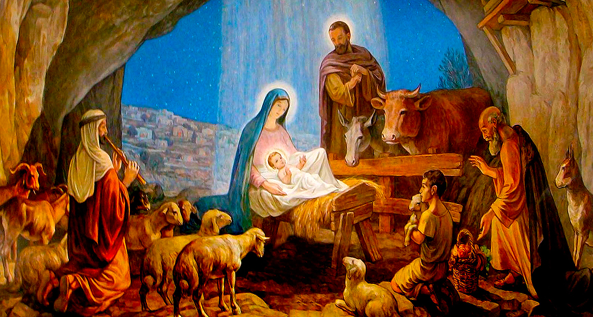

El 24 de diciembre marca un día crucial en el calendario global, ya que representa la víspera de la Navidad, una festividad celebrada por millones en todo el mundo. Esta fecha es significativa tanto para Jesús como para Santa Claus, cada uno con su propia razón para reclamarla.
Para los cristianos, el 24 de diciembre es la víspera del nacimiento de Jesús, una figura central en la fe cristiana. Esta fecha simboliza la llegada del Salvador al mundo, marcando el inicio de la Navidad y celebrando el mensaje de amor, esperanza y redención que Jesús representa.
Santa Claus, también conocido como Papá Noel, es una figura legendaria asociada con la entrega de regalos a los niños en la noche del 24 de diciembre. Esta tradición se ha convertido en una parte integral de las celebraciones navideñas en muchas culturas, simbolizando la generosidad, la alegría y el espíritu festivo.